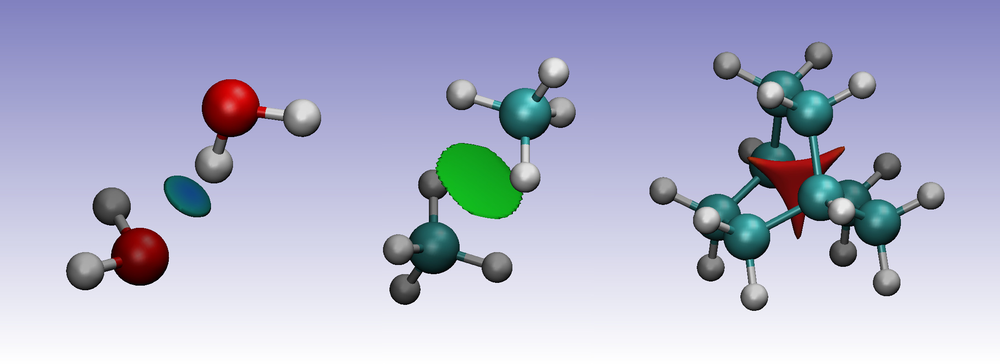

Non-Covalent Interactions (NCI)¶
NCI (Non-Covalent Interactions) is a tool to visualize an identify non-covalent interactions, such as van der Waals interactions, hydrogen bonds, and steric clashes. The index is based on the density and its derivatives.
The reduced density gradient, which is calculated using the density and its first derivative,
\[s\left(\mathbf{r}\right) = \frac{1}{2\left(3\pi ^2 \right)^{1/3}} \frac{\lvert \nabla \rho\left(\mathbf{r}\right) \rvert}{\rho\left(\mathbf{r}\right)^{4/3}}\]
is a dimensionless function, used to describe the deviation from a homogeneous electron distribution. In regions far from the molecule, in which the density decays to zero exponentially, the reduced gradient will have very large positive values. In regions of covalent bonding and non-covalent interactions, the reduced gradient have very small values, close to zero.
To study the non-covalent interactions the plot of the reduced gradients, \(s\left(\mathbf{r}\right)\), versus \(\rho\left(\mathbf{r}\right)\) plot is examined at low reduced gradient regions, as in this example for water:

For the monomer, the top left points, with a small density and large reduced density gradient, correspond to the tail regions of the density, far from the nuclei. The points at the lower right correspond to covalent bonds, with higher density (around 0.35 a.u.), but a near-zero reduced density gradient.
For the dimer, a new structure can be seen, a spike in the low-density, low-gradient region, which is typical of non-covalent interactions. This feature appears because, in the region of the non covalent interaction, the reduced density gradient becomes zero (as in covalent bonds), but, because of the non-covalent nature of this interaction, the density in this region is much lower than in covalent bonds (less then 0.05 a.u.).
To determine the type of the interaction, the sign of the Laplacian of the density, \(\nabla^2 \rho\left(\mathbf{r}\right)\), can be used. To do so, the three eigenvalues \(\lambda_i\) of the Hessian (second derivative) of the electron-density are calculated \(( \lambda_1 \leq \lambda_2 \leq \lambda_3)\). At the nuclei, all eigenvalues are negative, since the density is at a local maximum. In covalent bonds, the Hessian has one positive eigenvalue and two negative eigenvalues \(( \lambda_1 < 0, \lambda_2 < 0, \lambda_3 > 0)\). On the other hand, in regions of steric clashes or strain in the interatomic region (as in bicyclo[2.2.2]octene and ring or cage critical points), the second eigenvalue will be positive. Therefore, the sign of the second eigenvalue of the Hessian, \(\lambda_2\), can be used to distinguish between bonded \((\lambda_2 < 0)\) and nonbonded \((\lambda_2 > 0)\) interactions. The strength of the interaction can be assessed by the density itself: higher density values at the location of the non-covalent interactions indicate a stronger interaction. For this reason, the NCI method relies on the inspection of the reduced density gradient versus \(\text{sign}(\lambda_2)\rho\left(\mathbf{r}\right)\) plots:

these plots can be obtained from ChemTools by using the .plot('filename') function of the NCI tool.
The water dimer shows a low reduced density gradient spike at negative density values, indicating the stabilizing hydrogen-bonding. The methane dimer spike is very close to zero, but still has a negative \(\text{sign}(\lambda_2)\), due to it’s weak attractive dispersion-interaction. Bicyclo-[2,2,2]octene, on the other hand, shows a spike at positive values due to the steric clash in the centre of this molecule.
To visualise the location of the interactions, the low reduced density gradient isosurfaces can be studied. The gradient isosurfaces are coloured based on the value of \(\text{sign}(\lambda_2)\rho\left(\mathbf{r}\right)\). Blue regions with large, negative values of \(\text{sign}(\lambda_2)\rho\left(\mathbf{r}\right)\) show attractive non-covenant interactions, such as dipole-dipole interactions or hydrogen bonding, while red, positive regions show nonbonding, steric clashes. Values close to zero indicate weak non-covenant interactions, such as \(\pi\)-\(\pi\) stacking and van der Waals interactions.

In the water dimer, the isosurface forms a small, blue disk between the hydrogen and oxygen atoms. For the methane dimer, the isosurface forms a somewhat larger disk between the two molecules. The green colour indicates the electron density is smaller than in the water dimer, indicative for the weaker dispersion interaction between the two monomers. Finally, the sterically crowded bicyclo[2.2.2]octene has a isosurface at the centre of the molecule, where steric repulsion between the carbons is present.
In ChemTools these plots can be generated with the .dump_files('filename')
function. See the tutorials and example gallery for more details.
Todo
Add link to tutorials and example gallery once these are in their final form.
References:
- E.R. Johnson, S. Keinan, P. Mori-Sánchez, J. Contreras-García, A.J. Cohen, and W. Yang. Revealing noncovalent interactions. J. Am. Chem. Soc., 132(18):6498–6506, 2010. doi:10.1021/ja100936w.